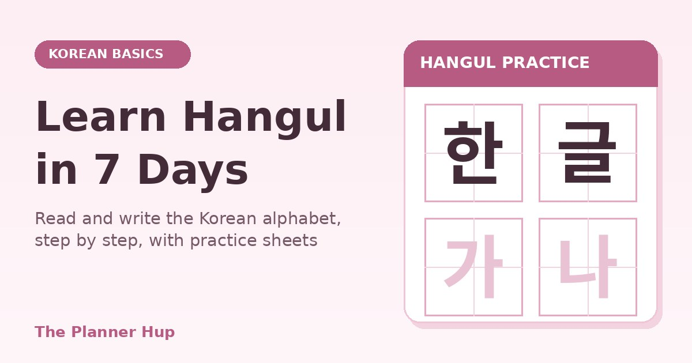

How to Learn Hangul: Read and Write the Korean Alphabet in 7 Days

Korean looks intimidating the first time you see it, but the alphabet is the friendliest part of the whole language. Every letter stands for a sound, the rules are consistent, and a motivated beginner can learn the basics in about a week of short daily sessions.
Timing helps, too. South Korea celebrates Hangul Day on 9 October, which falls on a Friday this year, so this week is a lovely moment to begin. This guide explains how Hangul works, lists all 24 basic letters with their sounds, and gives you a 7-day plan with reading and writing practice for every day.
What Hangul Is and Why It Is Easy
Hangul is the Korean alphabet. King Sejong the Great and his scholars created it in 1443, and it was formally announced in 1446 in a document called Hunminjeongeum, which means roughly “the correct sounds for teaching the people”. The aim was to give ordinary people a writing system they could learn quickly. UNESCO later added that document to its Memory of the World Register.
Modern Hangul has 24 basic letters: 14 consonants and 10 vowels. Unlike many alphabets, the letters were designed on purpose. The consonant shapes reflect the position of the mouth and tongue when you make the sound, so related sounds look related.
The one unusual thing is that letters are not written in a line. They are grouped into square syllable blocks. Once you understand the blocks, reading is just a matter of recognising each piece inside them.
What You Need Before You Start
- 20 to 30 minutes a day for 7 days. Short, repeated sessions work better than one long marathon.
- Tracing sheets. Our free Hangul Practice Sheet Generator makes printable worksheets for the basic consonants, the basic vowels, or basic syllables. You can also type your own characters.
- A pen or pencil and a notebook for writing letters from memory.
- Audio of a native speaker. Written descriptions of sounds are only approximate, so listen to each letter being pronounced in a video or app and copy it.
If you like to keep your study visible, tick each day off on a free weekly planner. Seeing seven boxes fill up is a surprisingly strong motivator.
How Syllable Blocks Work
Every Korean syllable is built into one square block. A block always starts with a consonant and a vowel, and may have a second consonant at the bottom. Where the vowel sits depends on its shape: tall vowels such as ㅏ and ㅣ go to the right of the consonant, and flat vowels such as ㅗ and ㅜ go underneath it.
| Pattern | Example | Sound | Built from |
|---|---|---|---|
| Consonant + vertical vowel (vowel on the right) | 가 | ga | ㄱ + ㅏ |
| Consonant + horizontal vowel (vowel underneath) | 고 | go | ㄱ + ㅗ |
| Silent ㅇ at the start | 아 | a | ㅇ + ㅏ |
| With a final consonant (batchim) | 한 | han | ㅎ + ㅏ + ㄴ |
Notice the silent ㅇ. When a syllable starts with a vowel sound, Korean writes ㅇ in the consonant spot as a placeholder, so 아 is simply the sound “a”. At the bottom of a block, the same letter makes an “ng” sound.
The 24 Letters and Their Sounds
The sounds below are approximations in English, so use them as a starting point and match them to real audio. Start with the vowels.
The 10 basic vowels
| Letter | Approximate sound | With silent ㅇ |
|---|---|---|
| ㅏ | a (as in “father”) | 아 |
| ㅑ | ya | 야 |
| ㅓ | eo (like the u in “cup”) | 어 |
| ㅕ | yeo | 여 |
| ㅗ | o | 오 |
| ㅛ | yo | 요 |
| ㅜ | u (as in “moon”) | 우 |
| ㅠ | yu | 유 |
| ㅡ | eu (say “oo” with your lips spread) | 으 |
| ㅣ | i (as in “see”) | 이 |
The 14 basic consonants
| Letter | Approximate sound | With ㅏ |
|---|---|---|
| ㄱ | g (k at the end) | 가 |
| ㄴ | n | 나 |
| ㄷ | d (t at the end) | 다 |
| ㄹ | r / l | 라 |
| ㅁ | m | 마 |
| ㅂ | b (p at the end) | 바 |
| ㅅ | s | 사 |
| ㅇ | silent at the start, ng at the end | 아 |
| ㅈ | j | 자 |
| ㅊ | ch (with a puff of air) | 차 |
| ㅋ | k (with a puff of air) | 카 |
| ㅌ | t (with a puff of air) | 타 |
| ㅍ | p (with a puff of air) | 파 |
| ㅎ | h | 하 |
Two groups are worth noticing. ㅋ, ㅌ, ㅍ and ㅊ are the “puff of air” versions of ㄱ, ㄷ, ㅂ and ㅈ, and the y-vowels ㅑ ㅕ ㅛ ㅠ are the plain vowels with one extra short stroke. Spotting these families cuts the amount you actually have to memorise.
The 7-Day Hangul Plan
Spend roughly 20 to 30 minutes a day. Each session has the same three parts: learn the new letters, write them, and read something with them.
| Day | Learn | Write | Read |
|---|---|---|---|
| 1 | Basic vowels: ㅏ ㅓ ㅗ ㅜ ㅡ ㅣ | Each vowel 10 times on a tracing sheet | Say 아 어 오 우 으 이 out loud |
| 2 | The y-vowels: ㅑ ㅕ ㅛ ㅠ | Notice they are the first vowels plus a short extra stroke; write each 10 times | Read 야 여 요 유, then quiz yourself on all 10 vowels |
| 3 | Consonants: ㄱ ㄴ ㄷ ㄹ ㅁ | Write each with ㅏ: 가 나 다 라 마 | Read 나무 (namu, tree), 다리 (dari, leg or bridge) |
| 4 | Consonants: ㅂ ㅅ ㅈ ㅊ | Write each with ㅏ, ㅣ and ㅜ | Read 바나나 (banana), 주스 (juice), 기차 (train) |
| 5 | Consonants: ㅋ ㅌ ㅍ ㅎ | Compare ㄱ with ㅋ, ㄷ with ㅌ and ㅂ with ㅍ | Read 커피 (coffee), 하나 (one), 포도 (grape) |
| 6 | Batchim: final consonants | Write 한, 국, 김, 랑 and notice the bottom letter | Read 한국 (Korea), 김치 (kimchi), 사랑 (love) |
| 7 | Review everything | Fill a blank grid with all 24 letters from memory, then write your own name | Read signs, menus or song titles and circle the letters you hesitate on |
Begin every session with a two-minute review of what you learned the day before. Then add the new letters. The review is what moves letters from short-term to long-term memory.
If you miss a day, do not double up. Simply continue where you stopped, and take an extra day at the end. Reaching the end in eight or nine days is still a great result.
How to Practise Writing Hangul
Reading and writing strengthen each other, so write a little every day. A simple process works well:
- Trace. Print a sheet from the Hangul Practice Sheet Generator. The faded letters guide your hand while you learn the shape. Most learners find that tracing each letter 5 to 10 times, spread over a few sessions, is enough to start remembering the strokes.
- Follow the stroke direction. As a general rule, write from top to bottom and from left to right, and follow the stroke order shown on your sheet or in your textbook.
- Say the sound as you write. This links the shape and the sound in your memory.
- Cover and recall. Hide the model and write the letter from memory. Check it, then fix only the ones you missed.
- Keep blocks balanced. Aim for every syllable to fit neatly inside an imaginary square. Neat handwriting comes with time, so do not worry about perfection in week one.
Common Mistakes and Look-Alike Letters
- Leaning on romanization. Use it as training wheels for a few days, then switch to reading the letters directly.
- Trying to learn all 24 letters in one evening. You may recognise them for an hour and forget them by morning. Spread the work out.
- Ignoring pronunciation. Do not guess the sounds from English. Listen to native audio, especially for ㅓ, ㅡ and the puffed consonants.
- Skipping reading aloud. Silent study hides mistakes. Say each syllable.
- Never reviewing. A two-minute recap at the start of each day matters more than an extra new letter.
These pairs look similar, so check them closely while you practise:
- ㅏ and ㅓ (the short stroke is on the right or the left)
- ㅗ and ㅜ (the short stroke points up or down)
- ㅈ and ㅊ (ㅊ has an extra line on top)
- ㅇ and ㅎ (ㅎ has a small hat on the circle)
- ㅁ and ㅂ (ㅂ is open at the top and has two short lines inside)
What to Learn After Week One
Once you can read the 24 basic letters, add the five double consonants (ㄲ ㄸ ㅃ ㅆ ㅉ) and the compound vowels such as ㅐ and ㅔ. After that, start collecting common words and short phrases.
To keep going, set a small daily routine and stick to it. Our guide to building a daily Korean study routine explains how, and 365 Days of Learning Korean lays out a longer roadmap. If you want a book to study with, see the 365 Days of Learning Korean book.
You can also use the free habit tracker generator to make a printable tracker for your daily Korean practice.
Frequently Asked Questions
How long does it take to learn Hangul?
Most beginners can learn to recognise and sound out the 24 basic letters within about a week of short daily practice, such as 20 to 30 minutes a day. Reading will still feel slow at first, and neat handwriting usually takes a few weeks more. The 7-day plan in this guide is designed around that pace.
Is Hangul really easy to learn?
The letters follow clear rules and each one stands for a sound, so the system is far more regular than many writing systems. That is why many learners find the alphabet the easiest part of Korean. Pronunciation details and the later grammar take longer, but the alphabet itself is a very achievable first goal.
How many letters are there in Hangul?
Modern Hangul has 24 basic letters: 14 consonants and 10 vowels. There are also 5 double consonants and several compound vowels that are made by combining the basic letters, which you can learn after the first week.
Do I need romanization to learn Hangul?
Romanization can be a helpful bridge in the first days, but try to stop relying on it quickly. Spellings in the Latin alphabet only approximate Korean sounds, and leaning on them makes reading real Korean slower later.
What is batchim?
Batchim is the consonant written at the bottom of a syllable block, for example the final ㄴ in 한 (han). It makes the syllable end with a consonant sound. You will meet it on day 6 of the plan.
What is the best way to practise writing Hangul?
Trace first, then write from memory. Start with a faded tracing sheet, repeat each letter several times over a few sessions, then cover the model and write it from memory. Say the sound out loud each time. Our free Hangul Practice Sheet Generator makes printable tracing sheets for consonants, vowels and syllables.
What should I learn after Hangul?
Next learn the double consonants and compound vowels, then start on common phrases and a small set of everyday words. Keep a short daily routine so the letters stay fresh while you add new material.
Open the Hangul Practice Sheet Generator See 365 Days of Learning Korean